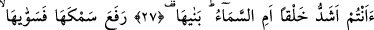
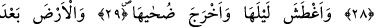
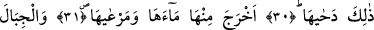
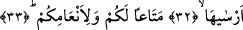

SİZİ YARATMAK MI
DAHA GÜÇ?
27. Sizi yaratmak mı daha güç yoksa gökyüzünü yaratmak mı? Ki onu (Allah)
bina etti,
28. Onu yükseltip düzene koydu.
29. Gecesini kararttı, gündüzünü ağarttı.
30. Bundan önce de yerküreyi döşedi.
31. Yerden suyunu ve otunu çıkardı.
32. Ve dağları sağlam bir şekilde yerleştirdi.
33. Kendiniz ve hayvanlarınız için bir faydalanma olmak üzere.
“Sizi yaratmak mı daha güç…” Bu hitab, öldükten sonra dirilmeyi zanlarınca zor
gören inkârcı Mekke’lilere karşı -bunun Allah’ın kudreti açısından ne kadar kolay
olduğunun- beyân edilmesinin ardından azarlama ve susturma yollu bir hitabtır. Nitekim
daha önce bu sûrenin 14. âyetinde öldükten sonra dirilmenin Allah açısından ne kadar
kolay olduğu “birden bire kendilerini mahşerde buluverirler” ifâdesiyle beyân
buyrulmuştu.
Âyette geçen “eşeddu” kelimesinin kökü olan “şiddet” kelimesi burada “sertlik ve
katılık” anlamında değil “zorluk” anlamındadır. Çünkü kelimenin “sertlik ve katılık”
anlamı burada uygun düşmemektedir. Buna göre âyet-i kerimeye mânâ vermek gerekirse
şöyle diyebiliriz: “Sizin takdirinize ve zannınıza göre öldükten sonra sizi yaratmak mı
daha güç, yoksa gökyüzünü yaratmak mı?” Görüldüğü üzere tefsir yaparken “sizin
takdirinize ve zannınıza göre” şeklinde bir takdirde bulunduk. Yoksa gerek bizim
yaratılmamız gerekse gökyüzünün yaratılması Allah’ın kudreti açısından birdir ve
eşittir.
“Yoksa” büyüklüğüne, yapısının muhkemliğine ve en küçük şeyini düşünmede bile
akılları hayrette bırakan mükemmel yapısına rağmen maddesiz olarak “gökyüzünü
yaratmak mı?” Buradaki soru, gökyüzünün yaratılmasının zorluğunu ikrar etmeleri için
bir takrir/tasdik ve onay) sorusudur. Böylece onlar kendilerine şöyle denilerek ilzam